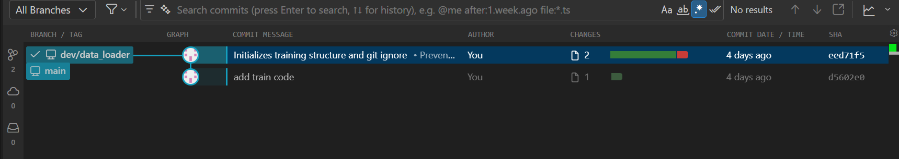
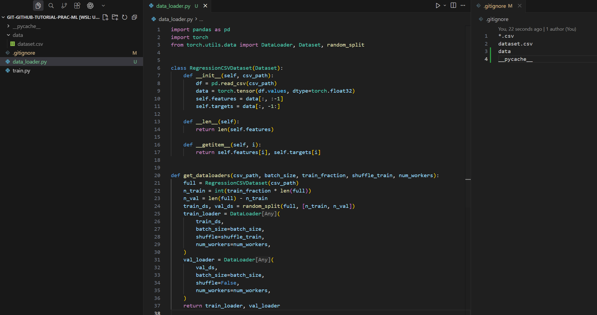
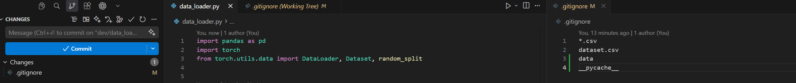
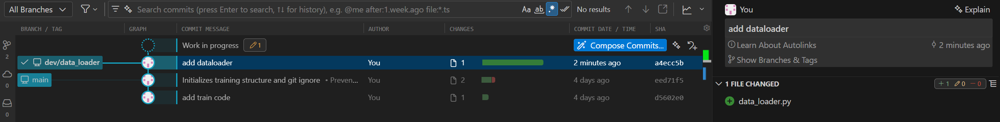
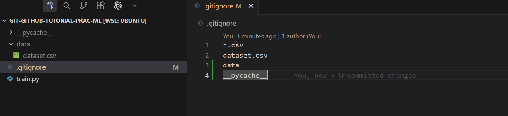
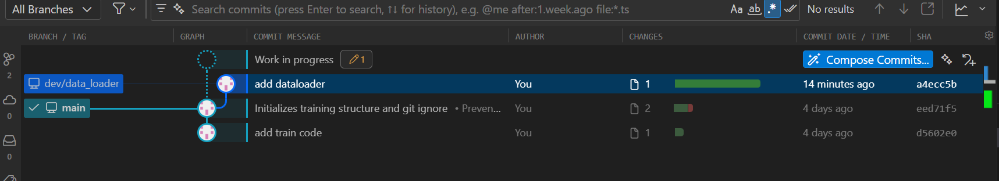
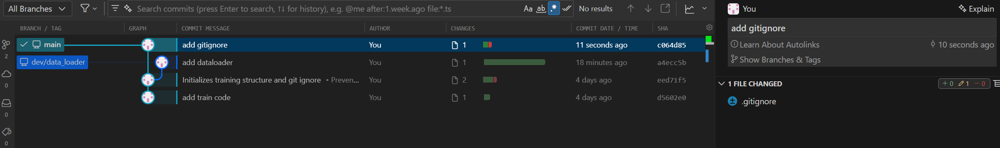

Branch
Create a branch
Let's develope a feature.
Create local branch.
git branch # List available branches
git branch dev/data_loader # Create new branch called `dev/data_loader`.
# NOTE: `dev/` is not strictly needed.
Consistent Branch Naming
Use a descriptive branch naming convention, such as feature/, bugfix/, or dev/, followed by the purpose (e.g., dev/data_loader). This makes tracking branches and their purposes easier in your repository.
git branch # View our new branch
git checkout dev/data_loader # Move from master to the example branch
git branch # See that we are on our new branch
Tip
You can create a new branch and switch to it at the same time using:
Or, using the newer command:

Develop in a new branch
Make your changes. We create data_loader.py and write code lines:

See the code and copy and paste to your machine
data_loader.py
import pandas as pd
import torch
from torch.utils.data import DataLoader, Dataset, random_split
class RegressionCSVDataset(Dataset):
def __init__(self, csv_path):
df = pd.read_csv(csv_path)
data = torch.tensor(df.values, dtype=torch.float32)
self.features = data[:, :-1]
self.targets = data[:, -1:]
def __len__(self):
return len(self.features)
def __getitem__(self, i):
return self.features[i], self.targets[i]
def get_dataloaders(csv_path, batch_size, train_fraction, shuffle_train, num_workers):
full = RegressionCSVDataset(csv_path)
n_train = int(train_fraction * len(full))
n_val = len(full) - n_train
train_ds, val_ds = random_split(full, [n_train, n_val])
train_loader = DataLoader(
train_ds,
batch_size=batch_size,
shuffle=shuffle_train,
num_workers=num_workers,
)
val_loader = DataLoader(
val_ds,
batch_size=batch_size,
shuffle=False,
num_workers=num_workers,
)
return train_loader, val_loader
Stage the changes:
Commit the changes:


Switch back to the main branch:
Note
You no longer see dataloader.py in main


Keep developing in main branch.

Others
Rename a branch
git branch -m new_name # Rename current branch to new_name
# or
git branch -m old_name new_name # Rename branch old_name to new_name
Delete a branch
Delete a local branch
git branch -a # After merging branch still exists
git branch -d example # Remove the local branch example
git branch -a # Local branch gone; remote still there
Delete a remote branch
git branch -a # Remote branch still exists
git push origin --delete example # Remove remote branch
git branch -a # All done, both local and remote removed